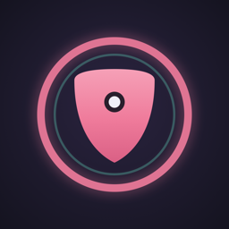

During a night out, a walk home, a first date or a ride, SafetySense notices on the phone itself when something is wrong. If you can't respond, it brings in your trusted people and then professional dispatch. It supplements 911 and never replaces it.
Get help to a student when they can't get it themselves, without recording their life or asking them to give up their privacy.
The safety apps we reviewed (UNM Safe, Noonlight, bSafe and Apple's built-in Emergency SOS and Check In) mostly rely on the person pressing a button or running a timer. In a sexual assault that can fail:
In a study of 298 women seen after a sexual assault, 70% reported significant tonic immobility, an involuntary inability to move.1
Someone who has been drugged may not recognise danger or be able to unlock a phone. No phone can detect a drug, but it can notice that you stopped responding.
A timer-based app may not react until the timer runs out. If SafetySense's heartbeat stops mid-session, its server raises the alert itself, designed to reach contacts in about 3 to 4 minutes.
New Mexico is still listed as the only US state without text-to-911. Its NG911 upgrade began in 2025.2
SafetySense keeps the basics students expect (SOS, live location, check-in timers, campus resources) and puts its effort into the moments those tools don't cover: proactive, on-device detection and a calm, trauma-informed escalation ladder that gets the right help without a tap.
| Who | Who they are | What they need from SafetySense |
|---|---|---|
| Primary users | UNM and CNM students aged 18–25 who go out at night: parties, bars, concerts, first dates from dating apps, walks to a car or dorm, rideshares. | Protection that works even if they freeze or are drugged, privacy they can trust, and a setup that takes under 3 minutes. |
| Trusted contacts | Friends, roommates and family the user picks (1–5). They don't need the app. | A phone call and a text with a live link: where the person is, their battery, what happened, and one-tap "I'm on my way" or "Send help". |
| Campus & community partners | LoboRESPECT Advocacy Center, the UNM Women's Resource Center, UNMPD, CNM Security, and the Rape Crisis Center of Central NM. | A tool that routes students to advocacy, SANE care and reporting options on the student's terms. These are proposed partners and haven't been contacted yet. |
| Mode | When | What's on |
|---|---|---|
| Everyday | Always (default) | No microphone. Manual SOS, trusted contacts, medical info, campus resources. |
| Walk Home | Walking to a car, dorm or bus | Live location to a contact, an arrival check, and an alert if you leave the route or stop too long. |
| Night Out | Party, bar, concert | Full Guard: on-device sound and speech detection, motion, check-ins every 30–90 min, drink-check prompts. |
| Date | A first date from an app | Night Out plus sealed date details (name, profile, place), encrypted and shown to contacts only if an alert fires. |
| Ride | Uber, Lyft, someone else driving | Logs the plate and driver. Alerts on a route change or an unexpected stop longer than 3 minutes. |
| Level | Trigger | What happens | How to stop it |
|---|---|---|---|
| 0 · Guarding | Session on | Audio is held only in a 30-second memory buffer. Nothing is saved. Lock Screen Live Activity. | End session (PIN or Face ID) |
| 1 · Check-in | Risk above threshold, or a scheduled check-in | A quiet haptic and "You okay?" with 45 seconds to answer. | Tap "I'm okay" |
| 2 · Alert | No answer, high risk, safe word, Action Button, or lost heartbeat | Contacts get a call and a live link. Encrypted evidence capture starts. | Safety PIN |
| 3 · Dispatch | 90 s at Alert with no cancel, a contact taps "Send help", or held SOS | Professional monitoring calls and texts a SafetySense relay number, not the user's phone. The relay forwards calls to the user, and texts are not forwarded. With no PIN or answer, monitoring passes the live location to 911. | Safety PIN, plus the dispatcher's call |
Duress PIN: it looks exactly like cancelling, but the alert stays live and moves to dispatch, for when someone forces the user to cancel. The screen shows nothing unusual. Dispatch is given a relay number, not the user's phone, and once the server has the duress PIN, the relay never connects a call to the phone and tells the caller to send police. This is tested with simulated calls and the Noonlight sandbox, not a real dispatcher call. The prototype has one relay number, so production needs a pool of numbers and Noonlight's confirmation that a relay is allowed. Manual triggers: Action Button, a Lock Screen and Control Center control, Siri ("SafetySense alert"), the safe word, and a hold-to-release SOS button. A Fake call helps the user leave a situation without explaining why.
The Support screen offers a 24/7 advocate, medical and SANE care, and reporting options (UNMPD, APD, Title IX or CNM), and also says plainly that keeping it private is fine. Nothing is required. The Face ID–locked Vault holds encrypted, hash-stamped evidence that the user shares only if they choose to.
| Capability | UNM Safe | Noonlight | bSafe | Apple built-in | SafetySense |
|---|---|---|---|---|---|
| Detects distress automatically | – | crash only (paid) | – | crash / fall | sound, words, motion |
| Alerts when the phone goes dark | – | – | – | Check In (timing varies) | server heartbeat |
| Duress PIN | – | – | – | – | yes |
| Date details revealed only if needed | – | partial | – | – | yes, encrypted |
| Professional dispatch with live location | call to UNMPD | yes | – | 911 call | yes (Noonlight API) |
| UNM and CNM resources | UNM only | – | – | – | both |
This table covers four tools our students are likely to have. Other apps have individual pieces. Centinela has scream and safe-word detection and a duress PIN, but no dispatch. aegis+ has a duress PIN and professional dispatch, but no distress detection. Citizen documents sound-triggered calls to its agents. We reviewed more than 70 products and found none that documents all of these together: on-device distress detection, a no-response ladder through contacts to professional dispatch, a session heartbeat watchdog and a duress PIN. This comes from public documentation, not hands-on testing.
We'll know SafetySense works when students trust it enough to turn it on, it rarely bothers them for nothing, and it gets help moving fast when it counts.
| Outcome | Target | How we measure it |
|---|---|---|
| False alarms stay rare | < 1 per 10 h | Alerts per 10 hours of Night Out guarding in pilot sessions, counted on the device and reported only with opt-in. |
| Help moves fast | < 60 s | Time from a scream in a scripted test to the first contact being called (event timestamps on the server). |
| Battery is acceptable | < 8% / hour | Measured with Xcode Energy tools on an iPhone 16e during 2-hour Guard sessions. |
| Setup is quick | ≥ 80% finish | Share of pilot users who complete onboarding, including the practice drill, in under 3 minutes. |
| Students feel safer, not watched | ≥ 4 / 5 | Post-pilot survey: "I would turn this on for a night out" and "I trust what it does with my data." |
| Contacts know what to do | ≥ 90% | Contacts in the practice drill who open the link and pick an action without instructions. |
Working prototype. A native iOS app with real on-device detection, a live backend, and real automated calls to a verified test phone. A dry-run test covers the full flow without calling anyone, and 136 automated tests cover the risk engine, escalation, vault and API contract.
Detection lab tests. Run the detector against recorded scenarios: parties, bars, arguments, screams and falls. Tune thresholds against the false-alarm and speed targets.
Students and advocates. A survey and moderated usability tests with UNM and CNM students (onboarding and the practice drill). Ask LoboRESPECT and Rape Crisis Center of Central NM advocates to review every word of the alert and support copy.
TestFlight pilot with a student organization, with opt-in, privacy-preserving metrics only. Move from the Noonlight sandbox to production dispatch only after a legal and privacy review.
Campus partnership. Offer it at new-student orientation and through the Women's Resource Center, with campus police numbers and SANE locations kept current by partners.
SafetySense improves a real part of student life at UNM and CNM: getting home safely. It's built around local gaps, such as New Mexico's lack of text-to-911 and the move from LoboGuardian to UNM Safe, and around local resources. It also works for anyone, on any campus, who wants a friend in their pocket on a night out.